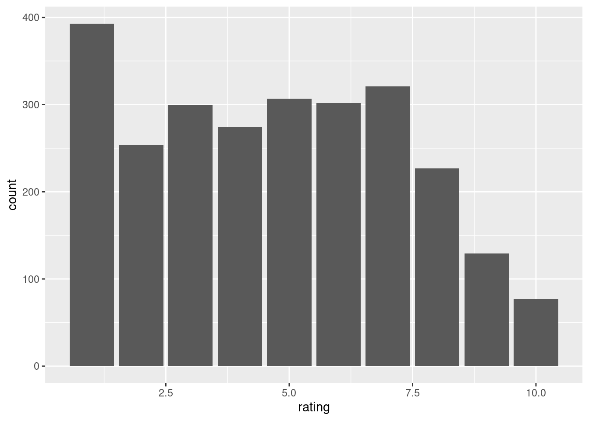
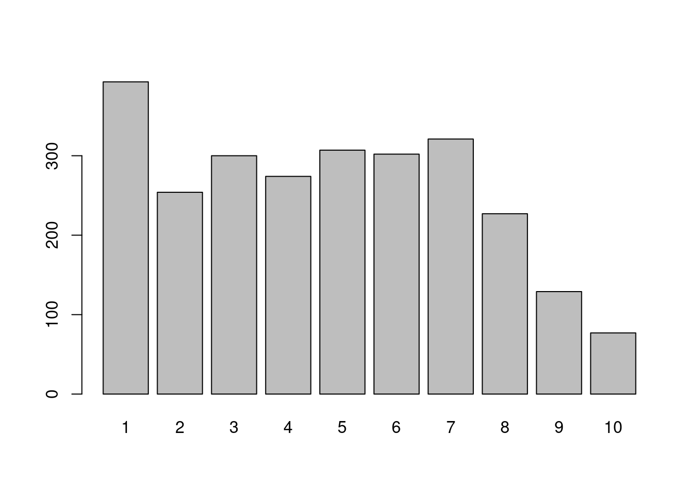
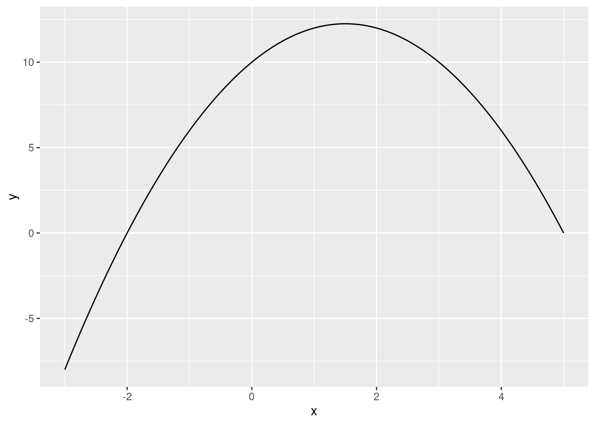
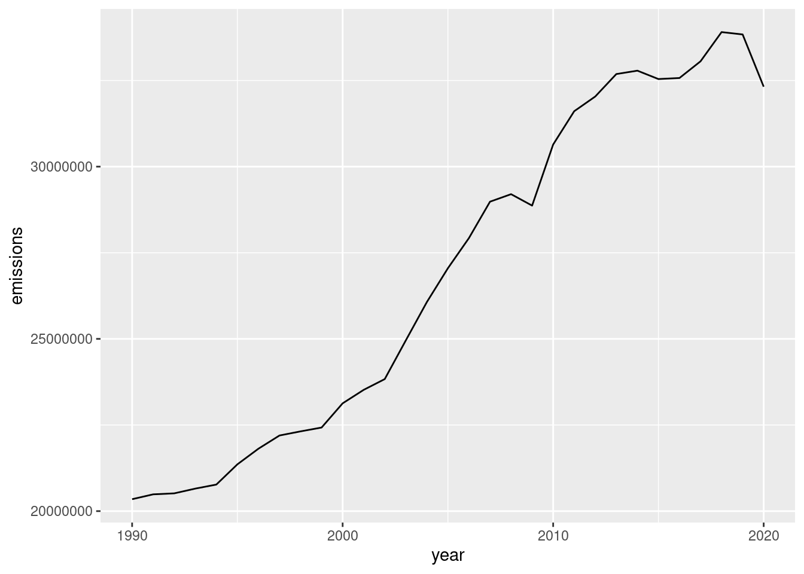

exp(3)[1] 20.08554Calculate \(e^3\) using R.
exp(3)[1] 20.08554Calculate \(\log_e\left(2\right)\) using R.
log(2)[1] 0.6931472If we create the following vector in R, what class will it be?
c(1, 2, "TRUE", "FALSE")x <- c(1, 2, "TRUE", "FALSE")
x[1] "1" "2" "TRUE" "FALSE"class(x)[1] "character"# All elements of a vector in R must have the same class. Here all elements
# are coerced to be character because "TRUE" and "FALSE" are character.
# These are not logical because they are surrounded by quotes.Write an R command to generate a numeric vector with 25 elements containing a sequence that goes from 0 to 1 (including 1) in equally-spaced intervals.
seq(from = 0, to = 1, length.out = 25) [1] 0.00000000 0.04166667 0.08333333 0.12500000 0.16666667 0.20833333
[7] 0.25000000 0.29166667 0.33333333 0.37500000 0.41666667 0.45833333
[13] 0.50000000 0.54166667 0.58333333 0.62500000 0.66666667 0.70833333
[19] 0.75000000 0.79166667 0.83333333 0.87500000 0.91666667 0.95833333
[25] 1.00000000The logical vectors a and b have equal length. Which of the following options is always the same as !(a & b), regardless of the contents of a and b?
!a & !b!a | !ba | b# Make two vectors covering every possibility:
a <- c(TRUE, TRUE, FALSE, FALSE)
b <- c(TRUE, FALSE, TRUE, FALSE)
# The target output is:
!(a & b)[1] FALSE TRUE TRUE TRUE# Try the different options:
!a & !b[1] FALSE FALSE FALSE TRUE!a | !b[1] FALSE TRUE TRUE TRUEa | b[1] TRUE TRUE TRUE FALSE# The second one, !a | !b, matchesDownload the dataset cv.csv. The dataset comes from an experiment where researchers sent CVs of hypothetical students from the University of Pennsylvania to employers. The employers were asked to rate the CVs from 1-10 on how interested they were in hiring them, where higher numbers indicate they were more interested. The purpose of the experiment was to test for discrimination among employers.
The variables are:
rating: The employer’s rating (1-10, higher is better).gpa: Student’s grade point average in their college courses (higher is better).white: Variable that equals 1 if the student is white and 0 otherwise.female: Variable that equals 1 if the student is female and 0 otherwise.tech_skills: Variable that equals 1 if the student has computer programming skills and 0 otherwise.unpaid_intshp: Variable that equals 1 if the student did an unpaid internship and 0 otherwise.top_intshp: Variable that equals 1 if the student did a prestigious internship at a top firm and 0 otherwise.second_intshp: Variable that equals 1 if the student did more than one internship and 0 otherwise.How many observations are in the dataset?
df <- read.csv("cv.csv")
nrow(df)[1] 2584What is the lowest GPA among all CVs in the dataset?
min(df$gpa)[1] 2.9How much higher is the average rating of CVs of students with technical skills compared to the average rating of CVs of students without technical skills?
In other words, calculate the difference in average rating between those with and those without technical skills.
mean(df$rating[df$tech_skills == 1]) - mean(df$rating[df$tech_skills == 0])[1] 0.04850361Create a variable called top_student according to:
\[ top\_student=\begin{cases} 1 & \text{ if } gpa \geq 3.9 \text{ and } tech\_skills = 1 \text{ and } top\_intshp = 1 \\ 0 & \text{ otherwise} \end{cases} \]
What is the mean of the variable top_student?
df$top_student <- df$gpa >= 3.9 & df$tech_skills == 1 & df$top_intshp == 1
mean(df$top_student)[1] 0.009287926Create a bar plot of the variable rating.
Fill in the blanks below using the information from the plot.
\(\_\_\) is the most common rating and \(\_\_\) is the least common rating.
library(ggplot2)
ggplot(df, aes(rating)) + geom_bar()
# or
barplot(table(df$rating))
# 1 is the most common, 10 is the least common.Download the dataset klm.csv. The dataset contains daily stock price information for airline company Air France-KLM SA. It contains the date, open price, daily high, daily low, closing price, adjusted closing price, and volume for each day between 17 January 2023 and 10 January 2024.
In this question you will need clean this dataset to answer the questions that follow.
You should do the following cleaning tasks:
Date variable to a date.Date ascending (the earliest date in the data should be first, the most recent date last).Open to numeric.Close. to close.Adj.Close.. to adj_close.If you did all the steps correctly, you should have 251 observations. The average of the open variable should be 1178.514 and the average of the high variable should be 14.95315. If only some of these match your cleaned dataset, you will still be able to answer some of the questions correctly.
# First perform all the cleaning tasks:
df <- read.csv("klm.csv")
# Format the date:
head(df$Date)[1] "10/01/2024" "09/01/2024" "08/01/2024" "07/01/2024" "06/01/2024"
[6] "05/01/2024"# Format is DD/MM/YYYYY (year with century):
df$Date <- as.Date(df$Date, format = "%d/%m/%Y")
# Order by date:
df <- df[order(df$Date), ]
# Convert Open to numeric:
df$Open <- gsub("[^0-9.]+", "", df$Open)
df$Open <- as.numeric(df$Open)
# Drop observations with missing data:
df <- na.omit(df)
# Change the names of Close. and Adj.Close..:
names(df)[names(df) == "Close."] <- "close"
names(df)[names(df) == "Adj.Close.."] <- "adj_close"
# Convert variable names to lower case:
names(df) <- tolower(names(df))
# Perform the checks:
nrow(df)[1] 251mean(df$open)[1] 14.74725mean(df$high)[1] 14.95315What is the median of the variable volume in the cleaned data?
median(df$volume)[1] 1267526What was the highest opening price in the dataset?
max(df$open)[1] 18.42Create a variable called day_of_week which indicates what day of the week each date is. One way to do this is to use the weekdays() function from the lubridate package with the date variable, i.e. weekdays(df$date)
Using this variable, what is the average closing price on Mondays in the dataset?
df$day_of_week <- weekdays(df$date)
mean(df$close[df$day_of_week == "Monday"])[1] 14.69404Create a variable called big_hml according to:
\[ big\_hml= \begin{cases} 1 & \text{ if } high - low \geq 1 \\ 0 & \text{ otherwise} \\ \end{cases} \]
On how many days in the dataset was the daily high at least $1 more than the daily low?
Hint: Use the ifelse() function.
df$big_hml <- ifelse(df$high - df$low >= 1, 1, 0)
sum(df$big_hml)[1] 9The following 3 questions will involve working with the following mathematical function defined over all real numbers \(x\): \[f(x) = 10 + 3x - x^2\]
Plot the function between the \(x\) values \(-3\) and \(+5\). Choose the answer below which best describes the shape of this function:
Note: you do not need to store your answer to this question in your R script.
f <- function(x) {
y <- 10 + 3*x - x^2
return(y)
}
library(ggplot2)
x <- seq(-3, 5, length.out = 2000)
y <- f(x)
df <- data.frame(x, y)
ggplot(df, aes(x, y)) + geom_line()
# We can see that it has an inverted U shape.Use R to find the value of \(x\) at an extreme point of this function.
f_max <- optimize(f, c(-100, 100), maximum = TRUE)
f_max$maximum[1] 1.5What value does the function take at the extreme point?
f_max$objective[1] 12.25# or alternatively:
f(f_max$maximum)[1] 12.25Download the two datasets:
country, year and emissions. The variable emissions is the number of metric kilotonnes of CO2 emitted in that country in that year. Note: 1 kilotonne is 1,000 tonnes (1 million kilograms).country, year and population. The variable population is the country’s population in that year.Using the dataset emissions.csv, get the total emissions from all countries in the dataset by year. In other words, get the global emissions in each year.
Plot the global emissions over time. Choose the answer below which best describes what we see in the plot:
df1 <- read.csv("emissions.csv")
global_emissions <- aggregate(emissions ~ year, data = df1, FUN = sum)
library(ggplot2)
ggplot(global_emissions, aes(year, emissions)) + geom_line()
# Total emissions are increasing over time except in the final couple of years of the dataset.Using the dataset emissions.csv, perform the following steps:
If you performed this correctly, your dataset should have 191 rows where the first 3 rows are:
country 2005 2015
1 Afghanistan 1961.711 10057.590
2 Albania 4095.900 4797.000
3 Algeria 94187.800 156273.000Which country experienced the largest increase in emissions from 2005 to 2015?
Tip: if your reshaped data is called wide, you can get the change from 2005 to 2015 with wide[, 3] - wide[, 2].
df1 <- read.csv("emissions.csv")
df1 <- df1[df1$year %in% c(2005, 2015), ]
library(reshape2)
wide <- dcast(df1, country ~ year)Using emissions as value column: use value.var to override.wide <- na.omit(wide)
# Check the number of rows and first 3 rows
nrow(wide)[1] 191head(wide, n = 3) country 2005 2015
1 Afghanistan 1961.711 10057.59
2 Albania 4095.900 4797.00
3 Algeria 94187.800 156273.00wide$country[order(wide[, 3] - wide[, 2], decreasing = TRUE)][1][1] "China"Use both datasets emissions.csv and population.csv to create a variable called emissions_per_capita according to:
\[emissions\_per\_capita = 1000\times\frac{emissions}{population}\]
We multiply by 1,000 to convert kilotonnes to tonnes.
What is the average of the emissions_per_capita variable in 2015?
Tip: First merge the two datasets emissions.csv and population.csv by the variables "country" and "year". Create the variable according to the formula above and then find the mean for 2015.
df1 <- read.csv("emissions.csv")
df2 <- read.csv("population.csv")
df <- merge(df1, df2, by = c("country", "year"))
df$emissions_per_capita <- 1000 * df$emissions / df$population
mean(df$emissions_per_capita[df$year == 2015])[1] 4.159425